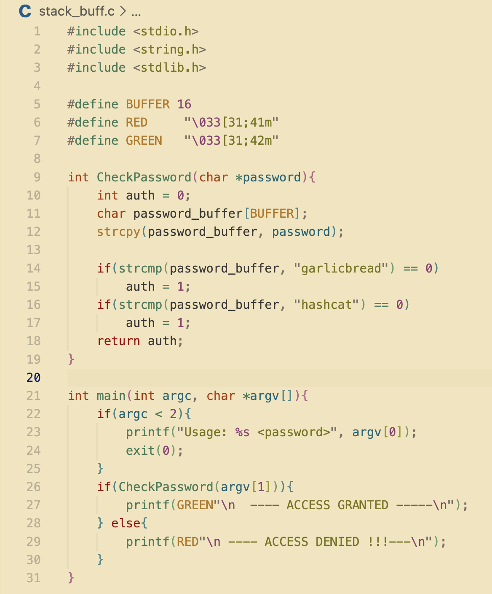
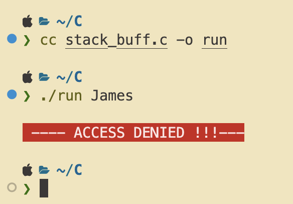

The Stack Buffer Overflow
I was reading through some common buffer overflows in C, I found one which caught my interest.
This is the stack buffer overflow. If you are reading this I assume you know what a stack memory is. It is one of the most important aspects in the computer architecture.
The Stack is a region where data is being added or removed in LIFO style (Last In First Out). The stack also stores and remembers all of the passed variables and functions. You can check out this for more understanding → Stack info
Back to main post, The stack buffer overflow will happen when we corrupt the memory to control the execution flow of the program. I wrote a simple password checker to demonstrate this process. Returns Access Granted if it the right one and returns Denied if it's the wrong pass.
| Snippet | Positive OUT | Negative OUT |
|---|---|---|
|  |  |
 |
— END —